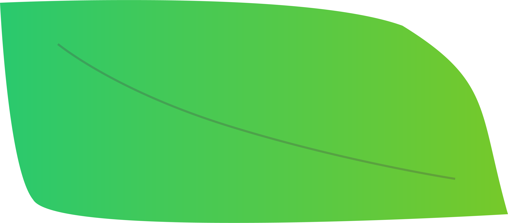

<ons-page>
  <ons-toolbar>
    <p style="margin-top: 200px;">
    </p>
    <div class="center" id="form-title">みんなのイイコト</div>
  </ons-toolbar>
  <div style="text-align: center; margin-top: 120px;">
    <!--
      <h3>日付を選択してください</h3>
    <p>
      <ons-input id="date" modifier="underbar" type="date" float></ons-input>
    </p>
   
    <p>
      <ons-select id="cate" onchange="editSelects(event)">
    <option value="ure">嬉しいこと</option>
    <option value="kana">悲しいこと</option>
    <option value="tano">楽しみなこと</option>
  </ons-select>
   -->
      </p>
      <p class = "bun">
      集まったイイコトの数
      </p>
      <p  id="ncount" class = "bun">
        -
    </p>
    <p class = "bun">
    </p>
    <p style="margin-top: 100px;">
       
      <p style="margin-top: -120px;">
       <p class="fade">
    <ons-list  id="reports">
    </ons-list>
    
       </p>
    </p>
    </p>
    <p style="margin-top: 120px;" class = "abso">
      <ons-button  id="view-report" >誰かのイイコトをみる</ons-button>
    </p>
       
    
      
    
  </div>
  
  <script>


    ons.getScriptPage().onInit = async function() {
      // 日報を閲覧するボタンを押した時の処理
      $('#view-report').on('click', async f => {
        // 検索対象の日付を取得
        //const day = new Date($('#date').val());
        //const category =$('[id=cate] option:selected').text(); 
        // 該当日の日報を取得
        const reports = await fetchReports();
        // 取得した日報を表示
        viewReports(reports);
      })

    }
/*
    ons.getScriptPage().onShow = async function() {
      $('#date').val(dayjs().format('YYYY-MM-DD'));

    }
*/
    // 日報の取得
    async function fetchReports() {
const Report = ncmb.DataStore('Report');
  return await Report
  .equalTo('report')
    //.equalTo('category',category)
    //.equalTo('day', day)
    .include('user')
    .fetchAll();
    
    }

    const GameScore = ncmb.DataStore("Report");
GameScore.equalTo("report")
         .count()
         .fetchAll()
         .then(function(results){
           if(results.count>=0 && results.count<10){
             // 検索結果の件数を表示
            $('.page__background').css('backgroundImage', 'url("lib/onsenui/image/01.gif")');
          }else if(results.count>=10 && results.count<20){
            console.log(results.count);
            $('.page__background').css('backgroundImage', 'url("lib/onsenui/image/02.gif")');
          }else if(results.count>=20 && results.count<30){
            $('.page__background').css('backgroundImage', 'url("lib/onsenui/image/03.gif")');
          }else if(results.count>=30 && results.count<40){
            $('.page__background').css('backgroundImage', 'url("lib/onsenui/image/04.gif")');
          }else if(results.count>=40 && results.count<50){
            $('.page__background').css('backgroundImage', 'url("lib/onsenui/image/05.gif")');
          }else if(results.count>=50 && results.count<60){
            $('.page__background').css('backgroundImage', 'url("lib/onsenui/image/06.gif")');
          }
          console.log(results.count);
          })
         .catch(function(err){
            console.log(err);
          });


    // 日報の表示処理
    function viewReports(reports) {
      const htmlm = [];
      const htmlc = [];
      //html.push(`<ons-list-header>${dayjs(day).format('YYYY年MM月DD日の日報')}</ons-list-header>`)
      reports.forEach(report => {
        htmlm.push(`
              ${report.get('report').replace(/\n/g, '<br />')}
        `)
        
      });
      //const htmlc =htmlm[Math.floor(Math.random() * htmlm.length)];
      htmlc.push(`
      ${htmlm[Math.floor(Math.random() * htmlm.length)]}
      `)
      
      
      console.log(htmlc);
      console.log(htmlm);
      console.log(reports.length);
      const ncounts = reports.length;
      console.log(ncounts);
    
      $('#reports').html(htmlc.join(''));
      $('#ncount').html(ncounts);
    }
  </script>
</ons-page>
